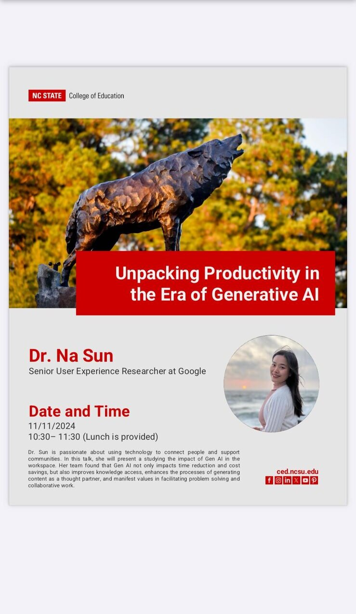
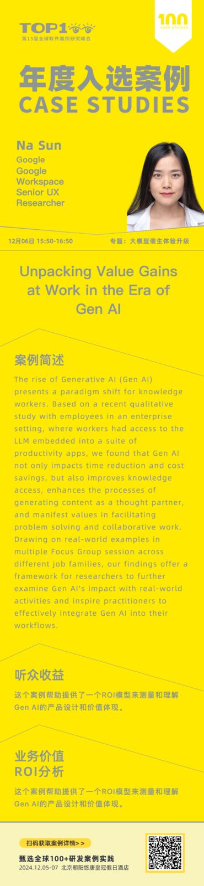
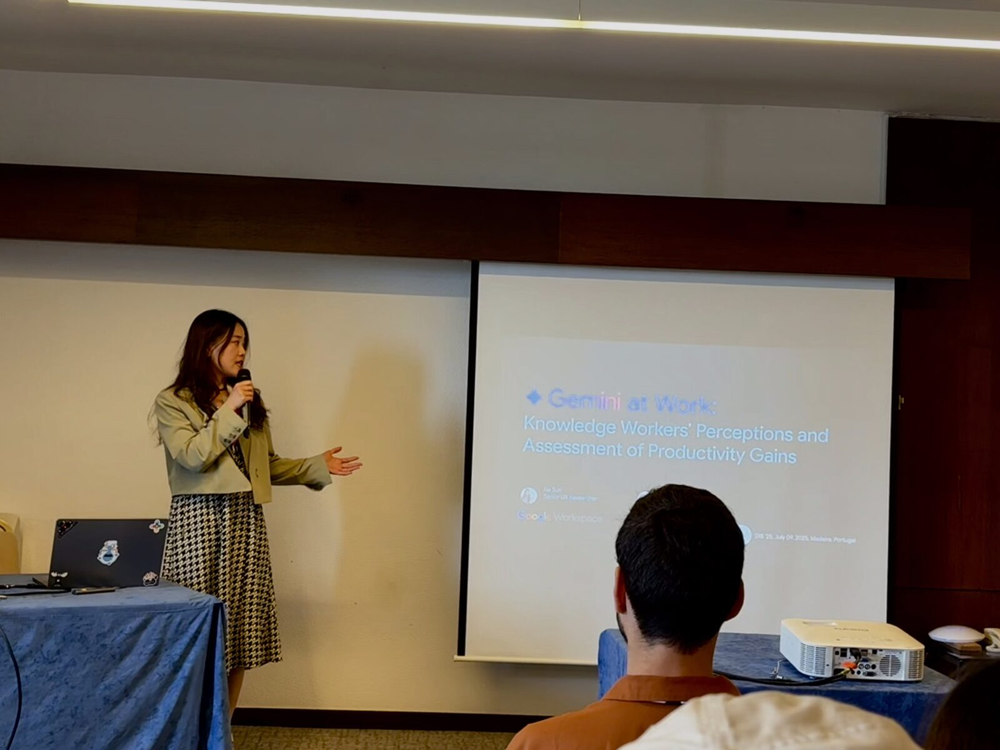
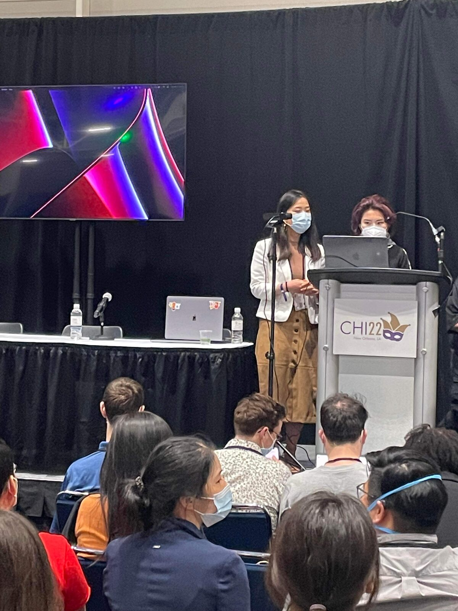

Publications & Talks
Peer-reviewed work on how people use AI at work, and on how community forms among people who never meet in person — plus where I've presented it.
Peer-reviewed publications
Gemini at Work: Knowledge Workers' Perceptions and Assessment of Productivity Gains
A focus-group study of knowledge workers across seven job families using generative AI in everyday work. The finding that mattered most wasn't speed: AI changed which parts of a job people handed over and which they kept, which is a different question than how much time it saved. DOI ↗
How Do Distance Learners Connect?
How students in a fully online program find each other and build ties without any shared physical context, and what infrastructure either helps or quietly prevents it.
Where is Community Among Online Learners? Identity, Efficacy and Personal Ties
What "community" actually means to distance learners — and why identity and self-efficacy turn out to matter more than the volume of interaction. The instrument behind this work is described in the dissertation case study.
Additional papers across CSCW, CSCL, GROUP, and ICALT, with citation counts, are on Google Scholar.
Talks
The Gen AI productivity research travelled through three very different rooms in nine months — a college of education, an international industry summit, and a peer-reviewed conference.

Unpacking Productivity in the Era of Generative AI
How generative AI reshapes knowledge work beyond time savings — knowledge access, content generation as a thought partner, and effects on collaborative problem solving.

Unpacking Value Gains at Work in the Era of Gen AI
The same research presented to an industry audience, framed around how teams can measure and reason about the value generative AI actually delivers.

Gemini at Work: Knowledge Workers' Perceptions and Assessment of Productivity Gains
Presenting the peer-reviewed study to the design research community.

From PhD to UX Research
On making the move from doctoral research into industry UX research — what transfers, what doesn't, and what nobody warns you about.
Confirm exact venue name and session title before publishing.